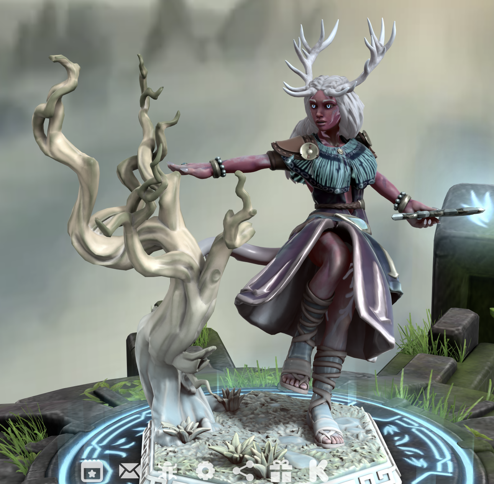

Rose Rime
"The Frosted Rose"
She speaks softly, as if the world might bruise under too much volume, her words often laced with a dry, cutting sarcasm that keeps others just far enough away. Beneath that guarded edge, however, lives a quiet, unwavering compassion—most evident in the way animals seem to trust her without question, as though they recognize something kindred in her spirit. She moves through life with a strange, haunting beauty, the kind that lingers in the mind long after she’s gone, equal parts enchanting and unsettling.
Though gentle and mild in demeanor, she is not without fault; impulse often guides her steps before reason can intervene. And when her carefully held composure finally fractures, the shift is unmistakable—her calm gives way to a fierce, unrelenting fury, swift and consuming as a storm breaking at sea.